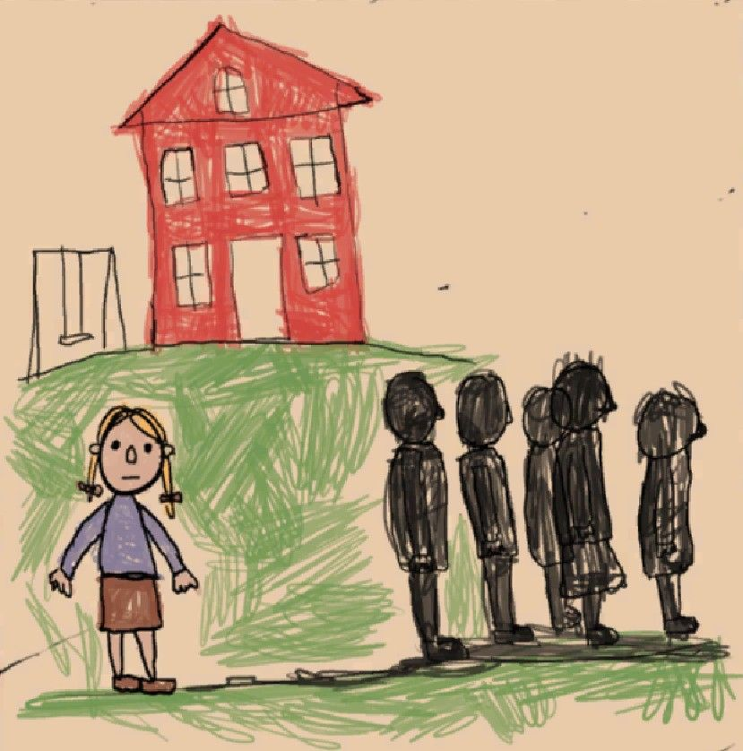

Nossa vida, minha filha, tornou-se um inferno, no sentido mais literal e cruel da palavra. E nós duas sabemos disso. Já reviramos essa dor de tantos ângulos que seria desonesto fingir surpresa. Mas, como eu já deixei claro antes, o que me dilacerava de verdade não era aquilo estar acontecendo comigo. Não era o sangue, os gritos, os hematomas, nem mesmo a exaustão constante que me consumia. O que realmente me destruía era ver tudo isso se infiltrando em você, no seu corpo pequeno, na sua mente ainda em formação, moldando sua infância, convertendo a dor em lição obrigatória.
Ver que você estava pagando por erros que não eram seus, por culpas que não nasceram em você, era o tipo de sofrimento que não se explica.
Mas, como se tudo isso já não fosse castigo suficiente, o mundo pareceu querer me lembrar que tragédia tem fases. E a fase seguinte chegou rápido, como um cavalo desgovernado atravessando a sala: as consequências começaram a aparecer.
Você, Miska, começou a se fechar. Começou a desaparecer devagar, não fisicamente, mas no olhar, no gesto, no modo de existir.
Aquela luz que brilhava no seu rosto, aquele calor infantil que aquecia qualquer ambiente em que você entrava, tudo isso se apagou. Você só saía do quarto se fosse chamada ou se te obrigassem a isso, e mesmo assim, com os passos curtos, o olhar baixo, como quem anda no campo minado da própria casa. E eu entendia. Eu via. Você estava com medo. Estava cansada de pagar com dor e humilhação cada movimento espontâneo que ousava fazer.
Seu sorriso virou algo raro. Dentro de casa, era quase inexistente.
Na escola, a situação só piorava. Você havia se tornado uma pequena ilha no meio de um oceano cheio de outras crianças. Não interagia mais, não trocava figurinhas, nem compartilhava os desenhos que antes enchia de cores e orgulho. Não levava mais brinquedos. Queria ficar sozinha, e sozinha ficava. E eu sei o que dizem por aí sobre o “isolamento infantil” ser fase ou temperamento, mas aquilo não era temperamento. Era sintoma.
A reclusão não parou por aí. Ela avançou para sua relação com o aprendizado. Os professores começaram a mandar recados, fazer ligações, marcar reuniões. Seu comportamento havia mudado completamente: você já não prestava atenção nas aulas, não entregava atividades, não demonstrava qualquer motivação. Estava alheia, como se tivesse sido expulsa da própria infância.
Suas notas despencaram. E eu sabia que aquilo não era por falta de capacidade. Você sempre foi inteligente, curiosa, cheia de perguntas e coberta de ideias.
Aquilo era falta de chão. Falta de segurança. Falta de paz.
Era como se, de forma silenciosa e cruel, você tivesse começado a aceitar aquela realidade como permanente. Passou a tratar o inferno como lar, acreditando que a dor e a vida miserável eram o destino inevitável. E por mais que eu tentasse, todos os dias, manter a esperança viva, lutar contra o que te consumia, sempre havia a sensação de que eu estava perdendo você para uma sombra que eu não conseguia expulsar.
A sucessão de acontecimentos nos levou ao que, infelizmente, já era previsível: mais agressões, mais humilhações. Aquele miserável usava qualquer justificativa para descontar a própria podridão em você. Mas não se engane, aquilo nunca foi sobre os "motivos". Era puro sadismo, e ele só precisava de uma desculpa qualquer para dar vazão à própria crueldade. Ele não punia. Ele se alimentava.
Ciente disso, e mesmo me sentindo esgotada, comecei a tentar te tirar de casa sempre que podia. Não era fuga, era sobrevivência. Eu só queria te dar algum respiro, um intervalo entre as pancadas e os gritos. Queria te oferecer o mínimo de normalidade, mesmo que só por algumas horas. Levava você para onde dava: pizzarias pequenas, feiras de bairro, mercadinhos, parques de diversão improvisados, ou até mesmo só para dar uma volta a pé em ruas que parecessem menos pesadas do que a nossa sala de estar.
E por mais simples que esses momentos fossem, eles eram preciosos. Eram como pequenas janelas por onde a luz ainda conseguia entrar. Porque nesses lugares, longe daquele homem, eu via algo em você que quase não via mais: vida. Um sorriso tímido, um brilho relutante no olhar, uma risada curta escapando entre mordidas de pizza ou entre um brinquedo de parque e outro. Aquilo era tudo pra mim. Aquilo era você.
A verdade é que eu só queria te devolver o que o mundo, ou melhor, o inferno que era nossa casa estava tentando roubar.
Queria recuperar o brilho dos seus olhos, a leveza da sua infância, a alegria que você merecia viver e não apenas imaginar.
Eu queria minha filha de volta.
E saber que, aos poucos, você estava escorrendo pelos dedos por causa de uma realidade que nunca escolheu... era horrível.
Eu lutava como podia, mesmo cercada por violência, por ameaças constantes, por uma rotina que me drenava até o osso. Ainda assim, entre cada noite mal dormida e cada hematoma escondido, eu me esforçava para garantir que, ao menos por alguns instantes, você pudesse se sentir uma menina de verdade.
Porque enquanto eu ainda tivesse fôlego, eu não ia permitir que esse mundo arrancasse você inteira de mim.
Então, continuei me agarrando a isso até você completar seus 14 anos.
← Retornar Prosseguir →